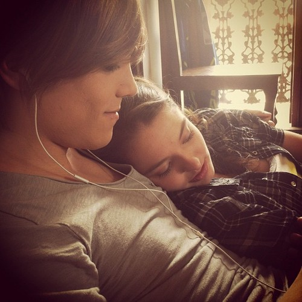
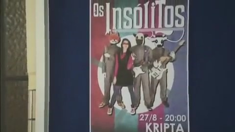
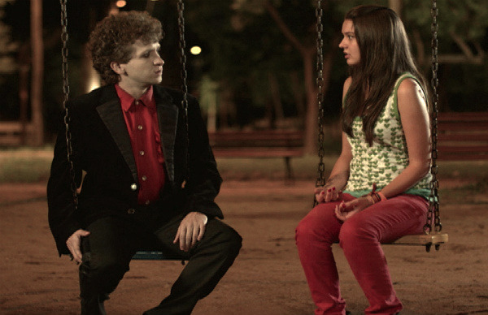

- En 2020, Netflix realizó una adaptación de la serie

- Marcelo Ferrari y Mariana Lessa mantuvieron una relación mientras se grababa la serie

- En la adaptación, los nombres de los fantasmas cambian, siendo Luke la versión de Daniel, Alexla versión de Martin y Reggie la versión de Felix

- En la versión original, la banda de los fantasmas el "Apolo 81". En la adaptación de Netflix su nombre es "Sunset curve"
- La banda de Julie en la versión original es "Os insolitos", mientras que en la adaptación es "Julie and the phantoms"

- Bruno Sigrist negó un beso con Mariana Lessa en la serie porque "ella era muy pequeña y él era mayor"
